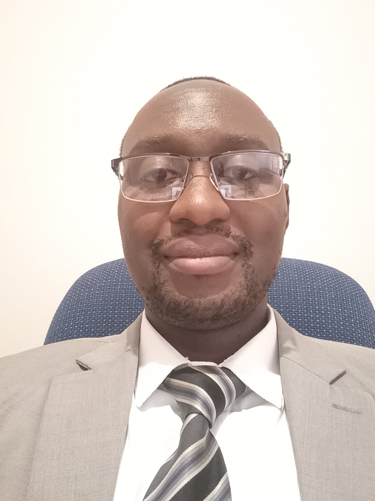

Innocent Hove

Mobile: +263 78 326 5928 | Email: innocenthove263@gmail.com | 2028 Hatcliffe, Harare North, Harare, Zimbabwe
Summary
I am a learning enthusiast with a proven track of self learning. I have a bachelor's degree in Biological Sciences, working on a second bachelor's degree in Applied Technology for a synegestic career in Biology Data Science.
Education
- BSc Applied Technology - Brigham Young University - Idaho (2022-2026)
- BSc Honors Biological Sciences - University of Zimbabwe (2012-2016)
Work Experience
Operations Supervisor - Cropserve (Pvt) Ltd
Dec. 2020 - Present
- Leading supply chain logistics with reduced turnaround time and cost from order placement to delivery to customers by over 50% for inbound overseas shipments
- Collaborating with suppliers and government institutions for product development and registration, increasing market outreach by over 10%
- Leading weekly shipments tracking reports, accurate costings, and development of optimal logistics solutions
- Management of offshore payments for acquittal with the central bank with zero non-compliance
Production Supervisor - West Agencies (Pvt) Ltd
Aug. 2016 - Mar. 2020
- Operations supervision in chicken meat processing
- Working with engineering and production team to develop solutions to production issuee, while maintaining food safety
Laboratory Assistant - The Swiss Federal Institute of Acquatic Science and Technology
June 2014 - Feb. 2016
- Technical and laboratory support for the microbiological analysis of over 600 hand washing samples from peri-urban Harare
- Accomplished zero-downtime in managing laboratory projects funded by the Swiss Agency for Development and Cooperation
- Furnished leadership, oral presentation, and team skills in training 20 research workers
- Attained scientific, laboratory management, and microbiology research reputation by contributing data for a research article by Freidrich et al. (2017): https://doi.org/10.1016/j.ajic.2016.06.035
Laboratory Assistant - Central Veterinary Laboratories
Aug. 2014 - June 20215
- Took part in the molecular extraction of the Zambezi Valley Annual Trypanosomiasis Surveillance
- Appraised the standards of ISO/IEC 17205:2005 for microbiology laboratory management and competence by actively carrying out diagnostic tests accompanied with the operation of modern equipment and promoting good laboratory practices and standards
- General laboratory maintenance and cleanliness
Storeman - Spar Groombridge
Jan. 2012 - Aug. 2012
- Inventory accounting with less than 5% stock loss
- Procurement and supply chain for a hot meal replacement department with zero-downtime in meal production
- Accurate planning, forecasting, and analysis of supplies and demand
Full-time Missionary - The Church of Jesus Christ of Latter-day Saints
Oct. 2009 - Oct. 2011
- Led over 40 missionaries as a zone leader training them to set goals and work to beat targets
- Worked 16 hours a day, studying, instructing, and helping people change behavior and life style
- Became proficient in English, setting high goals, and developing good habits
Skills
- Python
- Frontend technologies: HTML / CSS / JS / React
- Full-stack Web development: MERN, NextJs
- Database administration and data modelling in PostgreSQL, MongoDB, MySQL Server
- Convert software requirement into code
- APIs and Web Services
- Principles of programming and design
- Strong design and problem-solving skills
- Strong communication and interpersonal skills
- Study designs and statistical analysis
- Microbial routine culture and isolation
- Scientific writing
- Logistics and Supply Chain
Certificates
- Web and Computer Programming - BYU-I
- Web Development - BYU-I
- Database - BYU-I
- Linear Algebra (Foundations to Frontiers) - University of Texas
- Calculus Series: Differentiation, Integration, Coordinate Spaces - MIT
Other
Contact Me
Test Committ
Test Committ 2
Test Committ Main not Master